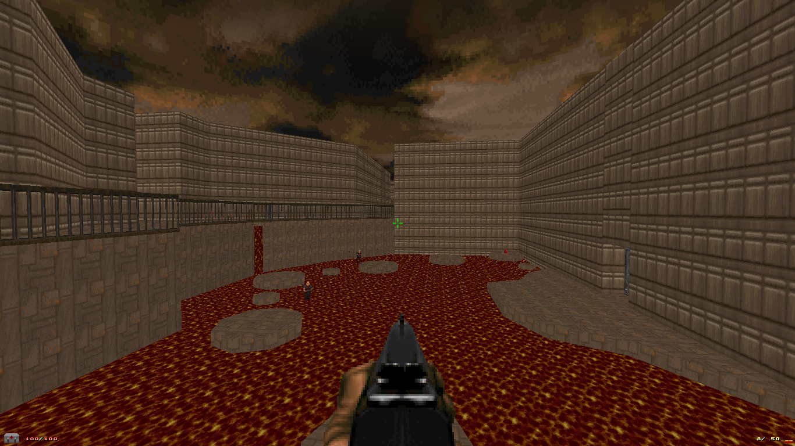
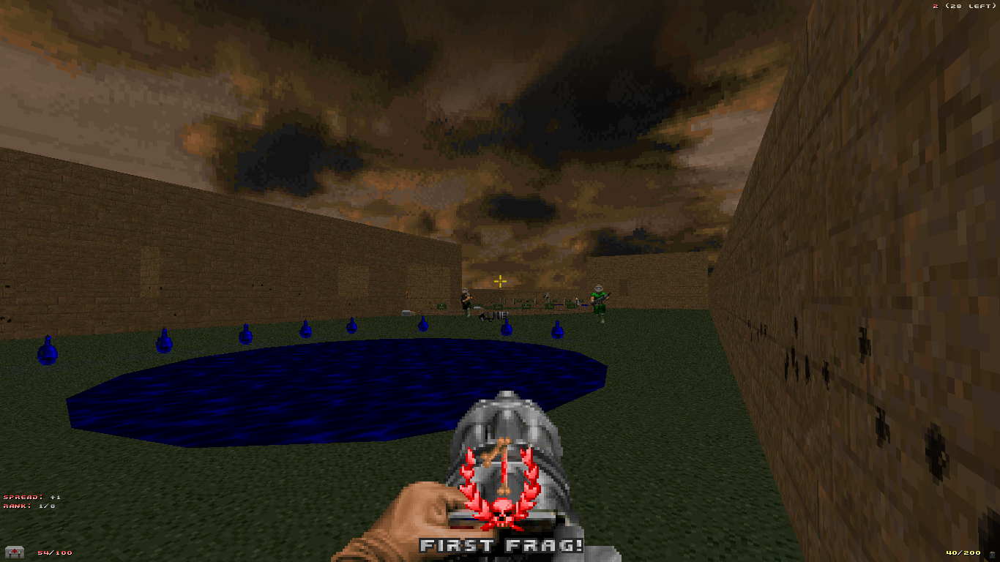

Doom Maps
←
Back to Home
Sometimes I like to do some maps for Doom
Source Ports just or fun when I'm listening to some music. It made
more than 6 years I've been doing maps for Doom and I belirve I've
reached very advanced, so I thought it would be cool to share them
somewhere. Here, I'm just made available some of the most recent
maps which I used most of my known techniques.

Name: Industry
Year: 2018
Music: Grand Metropolis - Sonic Heroes
Description: Map with
Industry Theme
Type:
Co-op/Single Player
.

Name:
Mapa de Deathmatch Sem Nome
Year: 2018
Music: (-)
(MAP01's generic music)
Decription: A
simple Deathmatch map.
Type: Deathmatch
Note:
Requires
a Doom IWAD and
Skulltag
actors.
Name: Neo
Tokyo
Year: 2018
Music: Electric Toothbrush - Jet Set
Radio
Description: A
free map, no finish. Based in one of my Mock-Ups with
same name (See the Mock-Ups
section), a city to explore, where I used most
of my Doom Engine acknowledge.
Tipo: Just for
fun
Nota²: I'm making available two versions of
the map. The first one is the actual, which is
majority stable, only with a few textures bugs. The
second one is an "alpha" version. It was the first
version of the map and have some changes from the
final version. It's an unstable version with a lot of
bugs during the whole map. I'm making it available,
just for curiosity to people see how the map had some
changes.
- Solister, March/07/2018
- Updated,
May/13/2018
(Translated on May/13/2018)